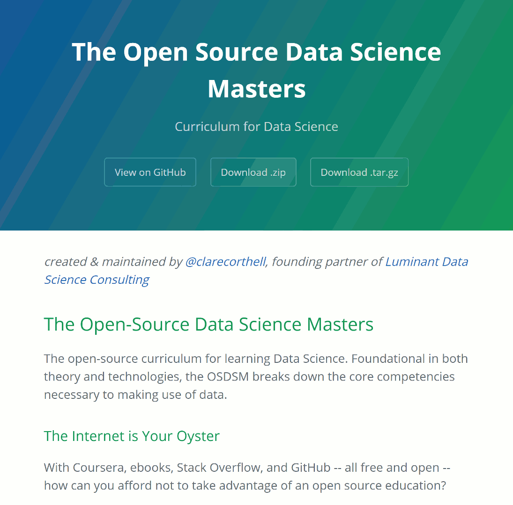
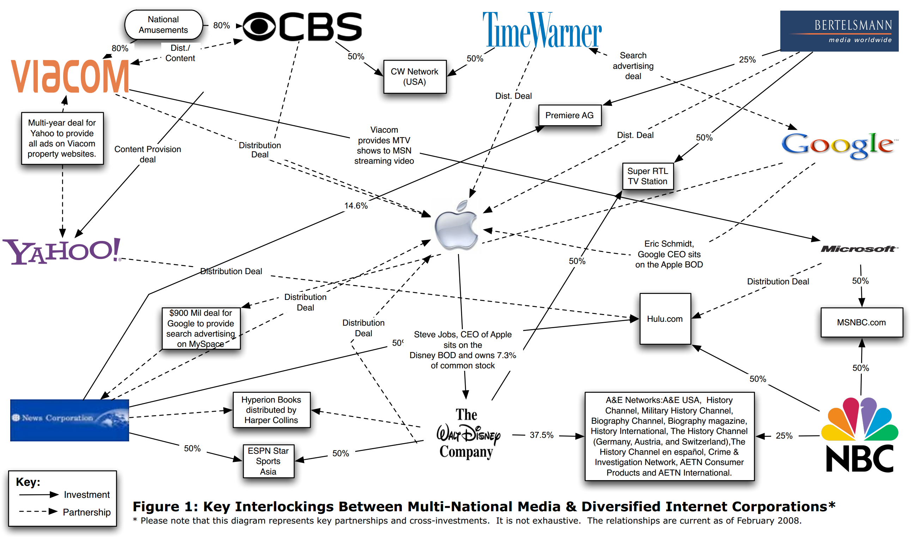
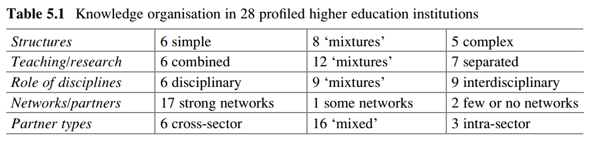

class: center, middle # 🏛 # Beyond the university: ## Mapping higher education after data science A thesis proposal by [Cory Salveson](http://corysalveson.com) --- # Background ### **Discourse** about the future of education is missing out on new networks and practices emerging online. ### *This matters because sociology of education helps us analyze power, agency, social mobility… and make policy about the same.* ### **Data science education** crosses many forms of education and is thus a good subject for mapping the field. --- # Background .left-column[**Data Science** education has exploded in the last few years. Many "degree" programs now appear… But how should we frame and study them?] .right-column[] --- # Background .left-column[**Data Science** education has exploded in the last few years. Many "degree" programs now appear… But how should we frame and study them?] .right-column[ - Cost/Funding structure? (Who pays?) - Role of government, industry, academia? - Pedagogy? - Results: innovation, social mobility, etc.? - Ideology/Discourse? ] --- # Background .left-column[**Data Science** education has exploded in the last few years. Many "degree" programs now appear… But how should we frame and study them?] .right-column[ - Cost/Funding structure? (Who pays?) - Role of government, industry, academia? - Pedagogy? - Results: innovation, social mobility, etc.? - Ideology/Discourse? *** ### Need a **flexible** but **structured** research design. ] --- # Research Design ### Structure: - **Comparative**, using typologies and network analysis to contributue to *instrument development* and/or *concept formation* - Focused on the problem of data observation/organization as such, in addition to data analysis ### Theoretical Frame: - **Sociology of education**, particularly the work of Basil Bernstein; and - **New Institutional Economics (NIE)**, especially concept of "institutions" vs. "organizational arrangements" ??? - Need to be able to structure and frame - Sociology of education = how does education "work" in social reality, e.g. in relation to the state - Code (Bernstein) - Habitus/Field Theory (Bourdieu) - NIE = how to arrangements of formal and informal rules, organizational formations, etc. develop; and what interests are expressed in how they are balanced --- # Research Questions ### RQ: What new **"institutions" and/or institutional arrangements** are forming in higher education (online.red[\*])? #### SQ1: What can and should be **observed and compared** between these institutions/arrangements? #### SQ2: What are the **power relations and interactions between** these institutions/arrangements? .footnote[.red[\*] "Online" in parentheses here because focus is on changes to institutions that are "networked", but not necessarily exclusively online. Also want to leave room to see possible "offline" disruptions in relation to other "online" activities.] --- # Data - Class catalog data, marketing materials, and curriculum/syllabus information - E.g. dataset of all MOOCs offered since 2007.red[\*]; catalog data websites - Public financial/organizational data - E.g. board of directors, revenue - Policy documents - E.g. U.S. [Higher Education Supplement to the National Education Technology Plan](https://tech.ed.gov/higherednetp/) .footnote[.red[*] Tentative; courtesy of [Class-Central.com](http://www.class-central.com/)] --- # Methodology ### 1. Build two **conceptual/descriptive typologies**: 1. 🏛️ Specific **institutions/institutional arrangements** offering "data science" education (of which there are *dozens*), applying: - New Institutional Economics (NIE); and: - Change in Networks, Higher Education and Knowledge Societies (CINHEKS) Higher Education Institution (HEI) profile 2. 🎓 Specific "data science" **classes and sites** (of which there are *hundreds*), applying: - Bernstein's educational "message systems" (Curriculum, Pedagogy, and Evaluaution); and/or: - Maton's knowledge vs. knower codes ??? Strategy: Iterate between the two. For example, a university may not offer data science degrees on campus, but might run one as a MOOC. --- # Methodology ### 2. Model **network** of institutions and classes/sites to analyze specific **power relationships** - More like Castells than Barabási, e.g. which universities have controlling interest in what platforms? --- # *Network Example*  .footnote[Arsenault, A. H., & Castells, M. (2008). [The Structure and Dynamics of Global Multi-Media Business Networks](http://ijoc.org/index.php/ijoc/article/view/298). International Journal of Communication, 2(0), 707-748.*] --- # Methodology ### 3. Descriptive statistics for select elements - E.g. % of D.S. content on MOOC platforms produced by companies versus universities - E.g.:  .footnote[Brennan, J., Papatsiba, V., Sousa, S. B., & Hoffman, D. M. (2016). [Diversity of Higher Education Institutions in Networked Knowledge Societies: A Comparative Examination](https://doi.org/10.1007/978-94-017-7369-0_5). In D. M. Hoffman & J. Välimaa (Eds.), *RE-BECOMING UNIVERSITIES?*] --- # Expected Results & Significance - Produce or work toward a typology that can serve as an instrument of observation in future study and contribute to new concept formation - Say something about a field of institutions and forces that haven't been studied together yet. - Build on CINHEKS in particular, contributing a view of new educational institutions - Respond critically to, or recommend new, "digital education" policy